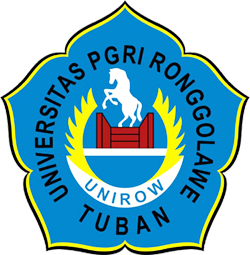

Engine otomasi penyusunan dokumen RPS resmi siap cetak A4 Landscape sesuai standar mutu kurikulum Outcome-Based Education (OBE) 2026. Memuat lengkap 4 tabel baku: Tabel 0 (Identitas, Otorisasi, CPMK, Sub-CPMK Taksonomi Bloom, Matriks CPL Nested 18 Baris), Tabel 1 (Silabus 16 Minggu Lengkap 8 Kolom), Tabel 2 (Rubrik Holistik), Pedoman Skala 7, Soal UAS HOTS, dan Tabel 3 (Lembar Validasi).
Pilih salah satu dari 63 mata kuliah untuk memuat dokumen RPS lengkap, atau sesuaikan data secara langsung pada panel kontrol lalu cetak/ekspor PDF.
|
 |
UNIVERSITAS PGRI RONGGOLAWE TUBAN
FAKULTAS KEGURUAN DAN ILMU PENDIDIKAN
PROGRAM STUDI PENDIDIKAN PANCASILA DAN KEWARGANEGARAAN
|
PMAT/I/PMA/MKK PMAT |
|||||
| RENCANA PEMBELAJARAN SEMESTER | |||||||
| MATA KULIAH (MK) | KODE | Rumpun MK | BOBOT (sks) | SEMESTER | Tgl Penyusunan | ||
| - | - | Mata Kuliah Kependidikan (MKK) | - SKS | - | - | ||
| OTORISASI | Pengembang RPS | Koordinator RMK | Ketua PRODI | ||||
|
-
|
-
|
-
|
|||||
| Capaian Pembelajaran (CP) | CPL-PRODI yang dibebankan pada MK | ||||||
| Capaian Pembelajaran Mata Kuliah (CPMK) | |||||||
| Kemampuan akhir tiap tahapan belajar (Sub-CPMK) | |||||||
| Korelasi antara CPL/CPMK terhadap Sub-CPMK | |||||||
| Deskripsi Singkat MK | |||||||
| Bahan Kajian: Materi Pembelajaran | |||||||
| Pustaka | Utama : | ||||||
| Pendukung : | |||||||
| Dosen Pengampu | |||||||
| Matakuliah syarat | |||||||
| Mg Ke- |
Kemampuan akhir tiap tahapan belajar (SubCPMK) | Penilaian | Bentuk Pembelajaran, Metode Pembelajaran, Penugasan Mahasiswa | Materi Pembelajaran [Pustaka] | Bobot Penilaian (%) | ||
|---|---|---|---|---|---|---|---|
| Indikator | Teknik & Kriteria | Luring (Tatap Muka) | Daring (Penugasan Mandiri) | ||||
| (1) | (2) | (3) | (4) | (5) | (6) | (7) | (8) |
Rubrik penilaian digunakan untuk mengukur pencapaian Sub-CPMK mahasiswa dalam berbagai bentuk penilaian (Tugas, Portofolio Media, Kuis, UTS, dan UAS).
| Aspek Penilaian | Sangat Baik (85-100) | Baik (70-84) | Cukup (60-69) | Bobot |
|---|
Mahasiswa dinyatakan lulus mata kuliah - apabila memperoleh nilai akhir minimal 60 (C) dengan komponen penilaian sebagai berikut:
| Nilai Huruf | A | AB | B | BC | C | D | E |
| Interval Skor | 85 – 100 | 80 – 84 | 75 – 79 | 70 – 74 | 65 – 69 | 60 – 64 | < 60 |
| Nilai Mutu | 4,00 | 3,50 | 3,00 | 2,50 | 2,00 | 1,00 | 0,00 |
| Kategori Mutu | Sangat Baik | Baik Sekali | Baik | Cukup Baik | Cukup (Batas Lulus) | Kurang | Tidak Lulus |
|
Menyetujui, Ketua Program Studi Pendidikan Matematika |
Mengetahui, Unit Jaminan Mutu (UJM) Prodi Pendidikan Matematika |
|
-
|
-
|
Cari dan jelajahi seluruh dokumen RPS Program Studi Pendidikan Matematika Kurikulum 2023 dari Semester 1 hingga Semester 8.
Penerapan rekayasa tabel presisi dan formula Outcome-Based Education (OBE) untuk dokumen kurikulum bebas cacat.
Format dokumen mengunci orientasi A4 Landscape presisi (841.7 pt × 595.45 pt / 16.838 dxa × 11.909 dxa) dalam 1 section utuh tanpa rotasi acak ke portrait.
Tabel matriks korelasi CPL terhadap Sub-CPMK tertanam rapi di baris ke-13 Tabel 0, memetakan kontribusi tiap Sub-CPMK, UTS (25%), dan UAS (25%) dengan total bobot 100%.
Menyuntikkan aturan XML <w:cantSplit/> pada setiap baris tabel sehingga uraian Sub-CPMK dan silabus mingguan tidak terbelah canggung saat berganti halaman.
Setiap Sub-CPMK memiliki label taksonomi terukur (C2–C6), selaras dengan Rubrik Holistik 4 aspek dan pedoman konversi nilai akhir resmi skala 7 (A, AB, B, BC, C, D, E).